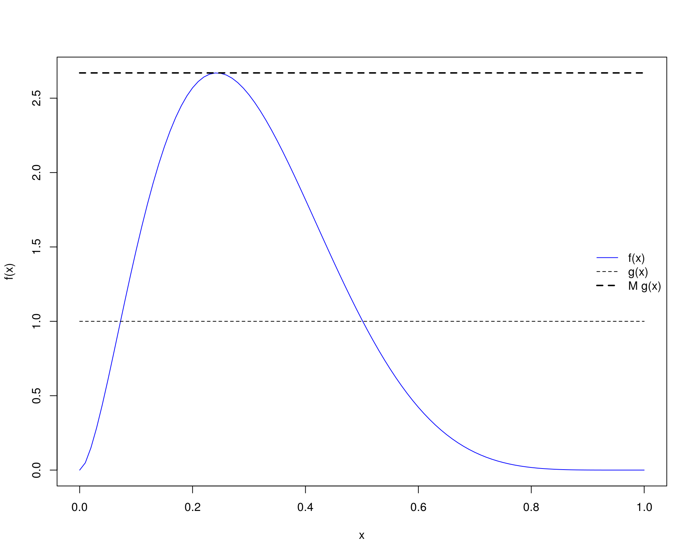
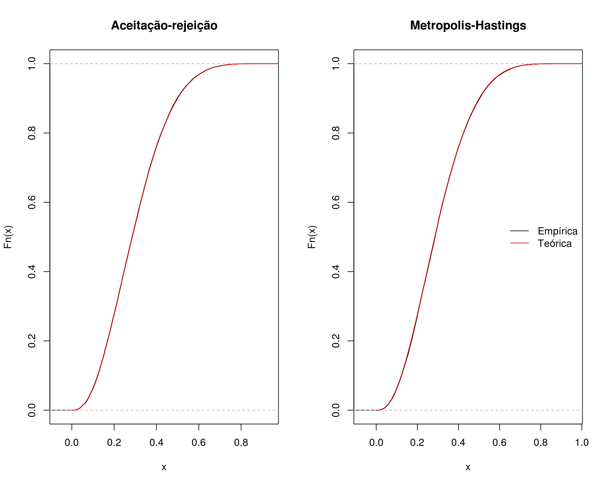
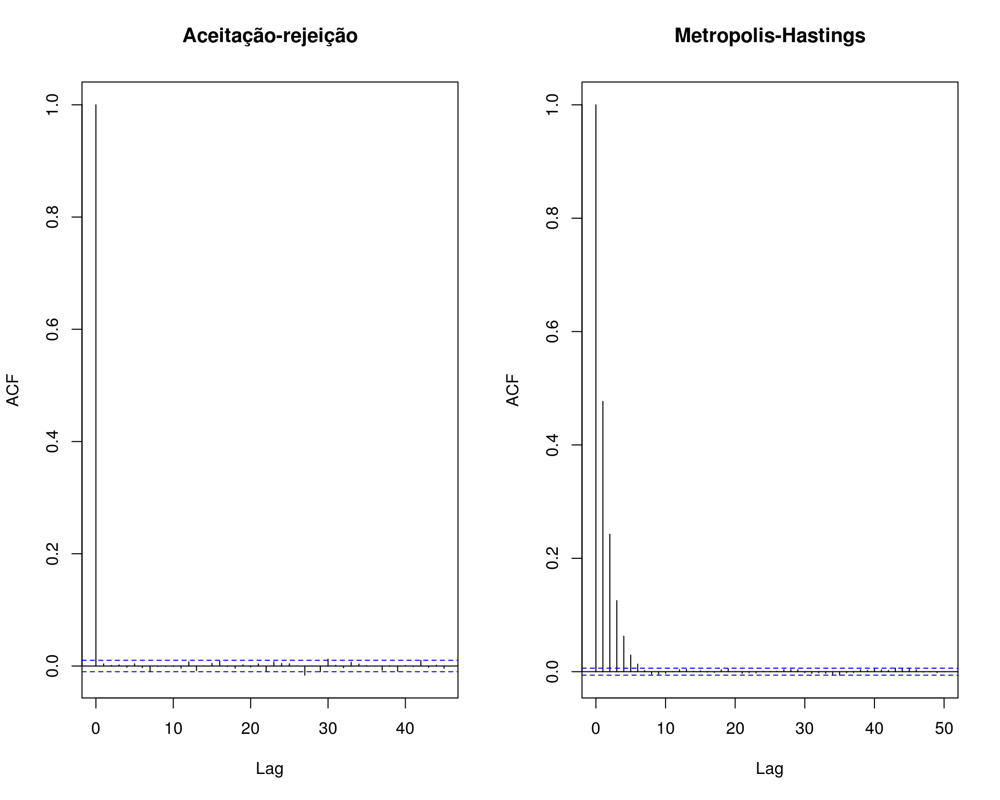
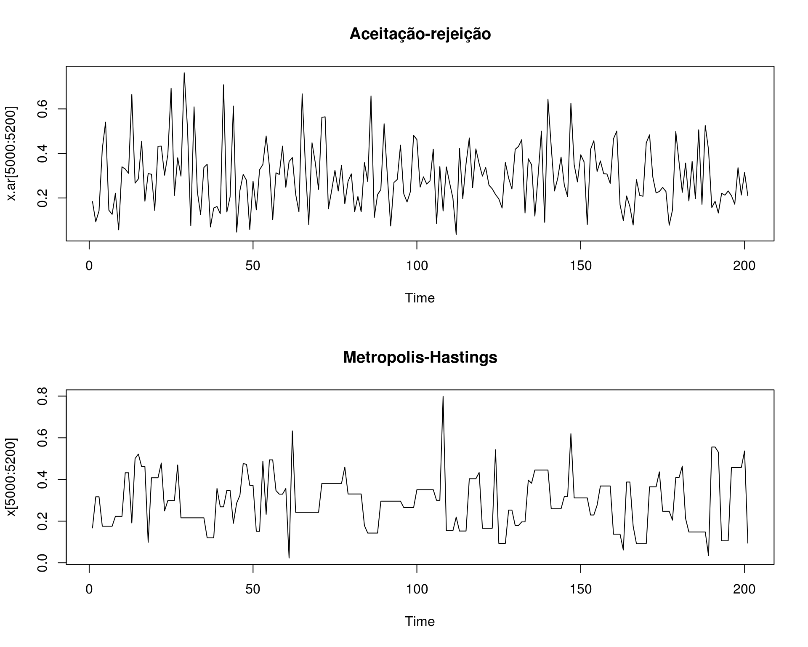
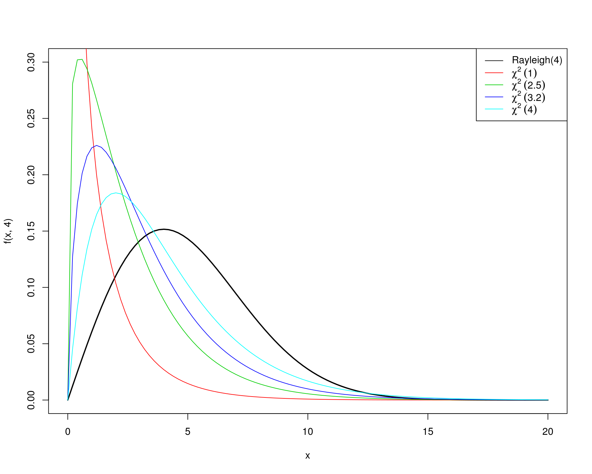
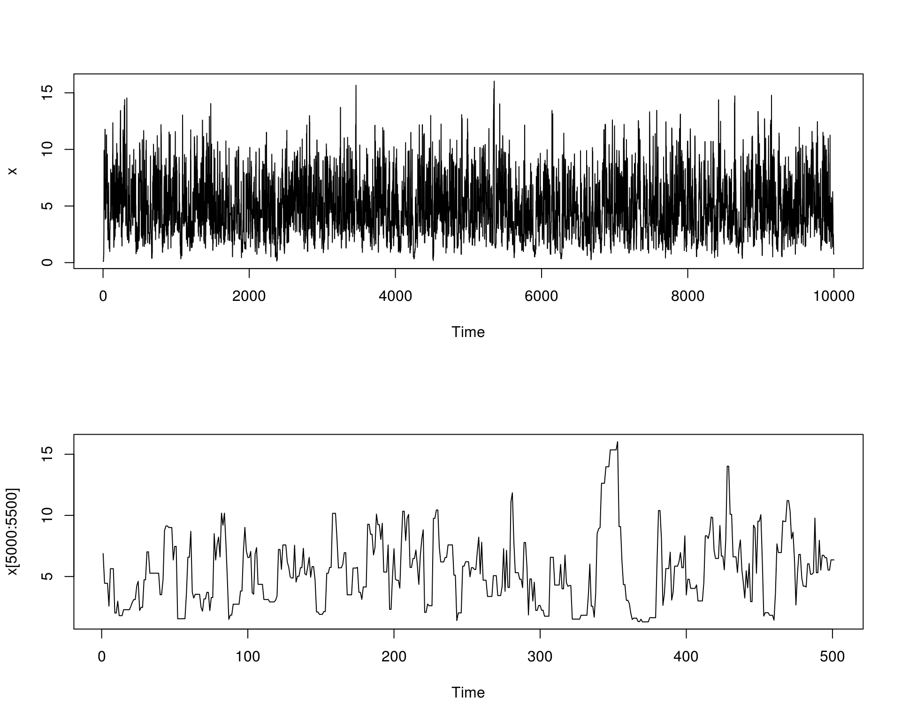
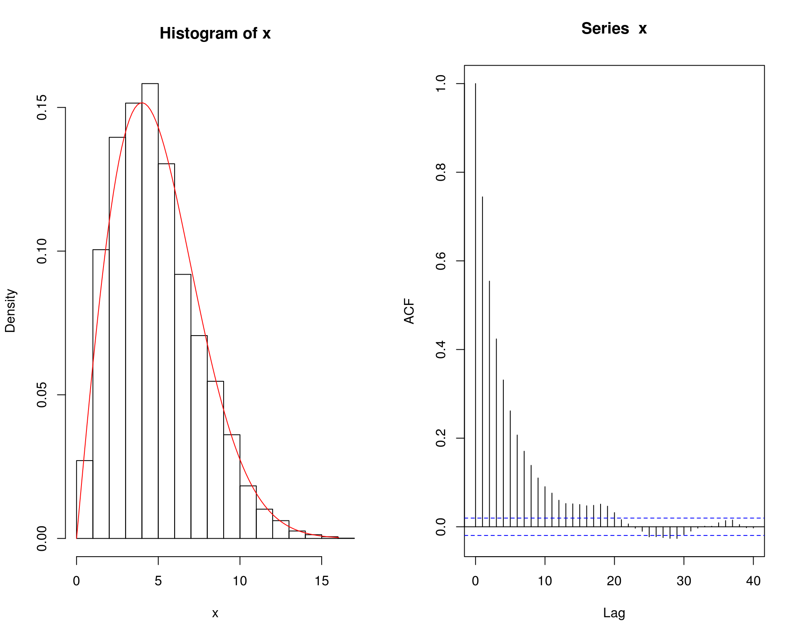
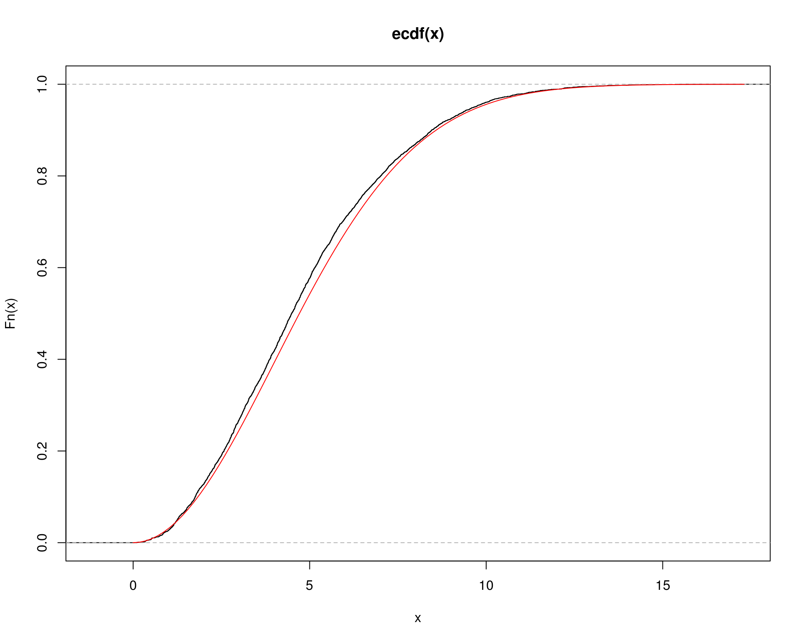
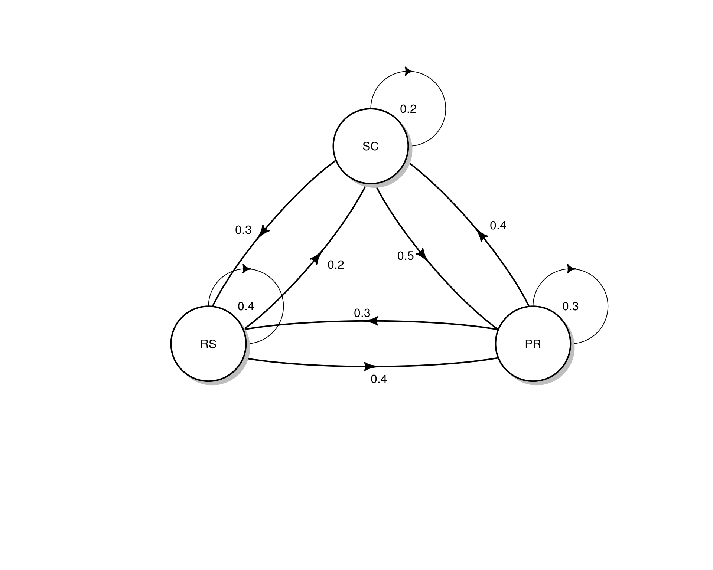

Métodos de Monte Carlo via Cadeias de Markov
Cadeias de Markov e algoritmo de Metropolis-Hastings
Fernando P. Mayer
1 Introdução
O termo “Monte Carlo via Cadeia de Markov” abrange uma grande gama de técnicas que possuem algumas ideias em comum:
- Queremos amostrar de alguma função densidade de probabilidade complicada \(f\). A suposição aqui é que nós conseguimos calcular \(f\), mas não podemos amostrar dela.
- Sabemos que certos processos estocáticos chamados de cadeias de Markov convergem para uma distribuição estacionária (se certas condições forem satisfeitas). Simular desta cadeia de Markov por um período longo, eventualmente nos levará a uma amostra da distribuição estacionária da cadeia.
- Dada a forma funcional de \(f\), queremos construir uma cadeia de Markov que possui \(f\) como sua distribuição estacionária.
- Queremos amostrar valores da cadeia de Markov de forma que a sequência de valores \(\{x_n\}\), gerada pela cadeia, irá convergir em distribuição para a densidade \(f\).
Já vimos que os métodos de Monte Carlo via Cadeias de Markov (MCMC) servem basicamente para gerar valores de uma distribuição. No entanto, ao contrário dos métodos anteriores (e.g. aceitação-rejeição), os valores obtidos por MCMC são correlacionados.
Uma amostra com valores correlacionados não é desejável, mas mesmo assim, os métodos de MCMC são preferidos em situações mais complexas. O primeiro motivo é que, mesmo com valores correlacionados, é possível selecionar uma (sub) amostra de valores que não seja correlacionada. O segundo motivo é que as cadeias de Markov possuem diferentes propriedades de convergência, que podem ser exploradas para se obter distribuições propostas mais fáceis de tratar numericamente, quando os métodos mais gerais de amostragem por importância (por exemplo) não se aplicam diretamente.
Além disso, o conhecimento necessário da distribuição alvo que se quer gerar é mínimo, geralmente não é necessário saber a constante de integração por exemplo. Além disso, estes métodos via cadeias de Markov facilitam a resolução de problemas de alta dimensão, através de uma sequência de problemas menores que são mais fáceis de resolver (e.g. amostrador de Gibbs).
2 Metropolis-Hastings
O algoritmo de Metropolis-Hastings gera uma cadeia de Markov \(\{X_0, X_1, \ldots\}\) conforme definido abaixo.
- Defina uma distribuição proposta \(g(\cdot|X_t)\)
- Defina um valor inicial \(X_0\), dentro do domínio de \(g\)
- Repita os seguintes passos até convergir para uma distribuição estacionária:
- Gere um valor candidato \(Y=X_{t+1}\) a partir de \(g(\cdot|X_t)\) (note que o valor candidato é dependente do valor anterior)
- Gere \(U\) de uma \(\text{U}(0,1)\)
- Calcule a taxa de aceitação \[ \alpha(X_t, Y) = \min \left( \frac{f(Y)g(X_t|Y)}{f(X_t)g(Y|X_t)}, 1 \right) \] Se \[ U \leq \alpha(X_t, Y) \] aceite \(Y\) e faça \(X_{t+1}=Y\); caso contrário faça \(X_{t+1}=X_t\)
Observações:
- Note que só precisamos conhecer o núcleo da densidade alvo \(f\), ou seja, não é necessário saber a constante de integração (ou de normalização), uma vez que, mesmo sem essa constante, a densidade de \(f\) será proporcional.
- Se a distribuição proposta for adequada, a “cadeia” de Metropolis-Hastings irá convergir para uma distribuição estacionária única \(\pi\).
- O algoritmo foi desenvolvido de forma que a distribuição estacionária da cadeia é de fato a distribuição alvo \(f\).
2.1 Exemplo (beta)
Considere o examplo de aulas anteriores sobre o algoritmo de aceitação-rejeição, onde deseja-se gerar valores de uma distribuição \(\text{Beta}(\alpha = 2.7, \beta = 6.3)\), com uma distribuição proposta \(\text{U}(0,1)\).
Para comparação, vamos gerar valores usando o método de aceitação-rejeição e agora pelo método de Metropolis-Hastings.
## Aceitação-rejeição --------------------------------------------------
## Define funções
f <- function(x) dbeta(x, 2.7, 6.3)
g <- function(x) dunif(x, 0, 1)
## Máximo M
(M <- optimize(f = function(x) {f(x)/g(x)},
interval = c(0, 1), maximum = TRUE)$objective)
# [1] 2.669744
curve(f, from = 0, to = 1, col = 4)
curve(g, from = 0, to = 1, add = TRUE, lty = 2)
curve(M * g(x), add = TRUE, lty = 2, lwd = 2)
legend("right", legend = c("f(x)", "g(x)", "M g(x)"),
lty = c(1, 2, 2), col = c(4, 1, 1), lwd = c(1, 1, 2), bty = "n")
## Simula com número fixo
N <- 1e5
## Amostra da proposta U(0,1)
y <- runif(N)
## Amostra u também de U(0,1)
u <- runif(N)
## Calcula a razão
r <- f(y)/(M * g(y))
## x serão os valores de y onde u < r
x.ar <- y[u < r]
## Aceitados
ua <- u[u < r]Pelo algoritmo de Metropolis-Hastings, a simulação seria:
## Metropolis-Hastings -------------------------------------------------
## Simula com número fixo
N <- 1e5
x <- numeric(N)
x[1] <- runif(1)
k <- 0 # para contar quantos foram aceitos
for (i in 2:N) {
y <- runif(1)
num <- f(y) * g(x[i - 1])
den <- f(x[i - 1]) * g(y)
alpha <- num/den
u <- runif(1)
if (u <= alpha) {
x[i] <- y
} else {
x[i] <- x[i - 1]
k <- k + 1 # contagem doa aceitos
}
}Comparando as duas abordagens:
## Taxa de aceitação - AR
1/M # teórica
# [1] 0.3745677
length(ua)/N
# [1] 0.37214
## Taxa de aceitação - MH
k/N
# [1] 0.54647
## Compara amostras com acumulada teórica
par(mfrow = c(1, 2))
plot(ecdf(x.ar), main = "Aceitação-rejeição")
curve(pbeta(x, 2.7, 6.3), add = TRUE, from = 0, to = 1, col = 2)
plot(ecdf(x), main = "Metropolis-Hastings")
curve(pbeta(x, 2.7, 6.3), add = TRUE, from = 0, to = 1, col = 2)
legend("right", legend = c("Empírica", "Teórica"),
lty = 1, col = 1:2, bty = "n")
## Compara autocorrelação
acf(x.ar, main = "Aceitação-rejeição")
acf(x, main = "Metropolis-Hastings")
## Compara as duas cadeias
par(mfrow = c(2, 1))
plot.ts(x.ar[5000:5200], main = "Aceitação-rejeição")
plot.ts(x[5000:5200], main = "Metropolis-Hastings")
Veja como fica uma animação com o método em funcionamento:
2.2 Exemplo (Rayleigh)
Usando o algoritmo de Metropolis-Hastings, gere uma amostra de uma distribuição \(\text{Rayleigh}(\sigma)\), que possui a densidade
\[ f(x) = \frac{x}{\sigma^2} e^{-x^2/2\sigma^2}, \quad x \geq 0, \sigma > 0 \]
A distribuição Rayleigh é utilizada para modelar tempo de vida sujeito à rápido decaimento. A moda da distribuição é em \(\sigma\) e \(\text{E}(X) = \sigma\sqrt{\pi/2}\), \(\text{Var}(X) = \sigma^2(4-\pi)/2\).
Como distribuição proposta, considere uma \(\chi^2\) com \(X_t\) graus de liberdade.
## Define funções
f <- function(x, sigma) {
(x / sigma^2) * exp(-x^2 / (2 * sigma^2)) * (x >= 0) * (sigma > 0)
}
g <- function(x, df) dchisq(x, df)
## Visualiza _algumas_ propostas (pois os graus de liberdade da
## qui-quadrado irá depender de cada valor sorteado em cada iteração).
## NOTE que os graus de liberdade da qui-quadrado não precisam ser
## inteiros
curve(f(x, 4), from = 0, to = 20, ylim = c(0, .3), lwd = 2)
curve(g(x, 1), from = 0, to = 20, add = TRUE, col = 2)
curve(g(x, 2.5), from = 0, to = 20, add = TRUE, col = 3)
curve(g(x, 3.2), from = 0, to = 20, add = TRUE, col = 4)
curve(g(x, 4), from = 0, to = 20, add = TRUE, col = 5)
legend("topright",
legend = c("Rayleigh(4)", expression(chi^2 ~ (1)),
expression(chi^2 ~ (2.5)), expression(chi^2 ~ (3.2)),
expression(chi^2 ~ (4))),
lty = 1, col = 1:5)
O algoritmo de Metropolis-Hastings nesse caso ficaria assim:
- Defina \(g(\cdot|X)\) como uma densidade de \(\chi^2(X)\)
- Gere \(X_0\) de \(\chi^2(1)\)
- Repita para \(i=2, \ldots, N\):
- Gere \(Y = X_{t+1}\) de \(\chi^2(X_t)\)
- Gere \(U\) de \(\text{U}(0,1)\)
- Calcule a taxa de aceitação \[ \alpha(X_t, Y) = \min \left( \frac{f(Y)g(X_t|Y)}{f(X_t)g(Y|X_t)}, 1 \right) \] onde \(f\) é a \(\text{Rayleigh}(\sigma)\), \(g(X_t|Y)\) é \(\chi^2(Y)\) avaliada no ponto \(X_t\), e \(g(Y|X_t)\) é a \(\chi^2(X_t)\) avaliada no ponto \(Y\).
- Se \[ U \leq \alpha(X_t, Y) \] aceite \(Y\) e faça \(X_{t+1}=Y\); caso contrário faça \(X_{t+1}=X_t\)
Portanto, para gerar valores de uma \(\text{Rayleigh}\) com \(\sigma=4\), uma implementação do algoritmo seria:
N <- 1e4
## Rayleigh(4)
sigma <- 4
x <- numeric(N)
x[1] <- rchisq(1, df = 1)
k <- 0 # para contar quantos foram aceitos
for (i in 2:N) {
y <- rchisq(1, df = x[i - 1])
num <- f(y, sigma) * g(x[i - 1], df = y)
den <- f(x[i - 1], sigma) * g(y, df = x[i - 1])
alpha <- num/den
u <- runif(1)
if (u <= alpha) {
x[i] <- y
} else {
x[i] <- x[i - 1]
k <- k + 1 # contagem dos aceitos
}
}## Taxa de aceitação
k/N
# [1] 0.4062
## Traço da cadeia
par(mfrow = c(2, 1))
plot.ts(x)
plot.ts(x[5000:5500])
par(mfrow = c(1, 1))
## Histograma da distribuição e correlação entre as observações
par(mfrow = c(1, 2))
hist(x, freq = FALSE)
ind <- seq(0, max(x), length.out = 100)
lines(ind, (f(ind, sigma)), col = 2)
acf(x)
par(mfrow = c(1, 1))
## Compara acumulada empírica com teórica
## Acumulada teórica da Rayleigh
Fx <- function(x, sigma) {
1 - exp(-x^2/(2 * sigma^2)) * (x >= 0) * (sigma > 0)
}
plot(ecdf(x))
curve(Fx(x, 4), add = TRUE, col = 2, from = 0)
Extra: Cadeias de Markov
Uma cadeia de Markov é um processo estocático que evolui ao longo do tempo, passando por diversos estados. A sequência de estados é denotada pela coleção de valores \(\{X_t\}\), ou seja, é uma sequência de variáveis aleatórias dependentes \[ X_0, X_1, \ldots, X_t, \ldots \] onde a transição entre os estados é aleatória, segundo a regra \[ P[X_t | X_{t-1}, X_{t-2}, \ldots, X_0] = P[X_t | X_{t-1}] \] Essa relação significa que a distribuição de probabilidade de um processo no tempo \(t\), dado todos os outros valores da cadeia, é igual à distribuição de probabilidade condicionada apenas ao valor imediatamente anterior (essa propriedade é conhecida como propriedade de Markov).
Dessa forma, para determinar a sequência de valores que a cadeia pode assumir, podemos determinar a distribuição do próximo valor conhecendo apenas o valor anterior.
A coleção de estados que uma cadeia de Markov pode visitar é chamada de espaço de estados. A distribuição de probabilidade condicional, que determina se a cadeia se move de um estado para outro é chamada de kernel de transição ou matriz de transição, e pode ser denotada por \[ X_t | X_{t-1}, X_{t-2}, \ldots, X_0 \sim K(X_{t}, X_{t-1}) \] Por exemplo, uma cadeia de Markov do tipo random walk satisfaz \[ X_t = X_{t-1} + \epsilon \] onde \(\epsilon \sim \text{N}(0,1)\), independente de \(X_t\). portanto, o kernel de transição \(K(X_{t}, X_{t-1})\) corresponde a uma densidade \(\text{N}(X_{t-1},1)\).
Considere o seguinte exemplo com 3 estados e matriz de transição \(P\):
estados <- c("PR", "RS", "SC")
P <- matrix(c(.3, .3, .4, .4, .4, .2, .5, .3, .2),
byrow = TRUE, ncol = 3)
dimnames(P) <- list(estados, estados); P
# PR RS SC
# PR 0.3 0.3 0.4
# RS 0.4 0.4 0.2
# SC 0.5 0.3 0.2
rowSums(P)
# PR RS SC
# 1 1 1
colSums(P)
# PR RS SC
# 1.2 1.0 0.8
## DAG
diagram::plotmat(t(P), relsize = .75)
A interpretação das entradas da matriz é que, se estivermos no estado \(i\) no tempo \(t\), a probabilidade de mover para o estado \(j\) no tempo \(t+1\) será \[ P[X_{t+1} = j | X_t = i] = P_{ij} \] Por exemplo, se estamos no PR, a probabilidade de ir para SC é 0.4, ou seja, \(P[X_{t+1} = \text{SC}|X_t = \text{PR}] = P_{13} = 0.4\).
Suponha que inicialmente estamos em SC com probabilidade 1. Então a distribuição de probabilidade inicial para os três estados é \(\pi_0 = (0,0,1)\). Após uma iteração, a distribuição de probabilidade dos estados será então \[ \pi_1 = \pi_0 P = (0.5, 0.3, 0.2) \]
Após duas iterações, a probabilidade será
Se continuarmos o processo acima \(n\) vezes, obtemos a distribuição de probabilidade para os estados após \(n\) iterações, que podemos escrever como \[ \pi_n = \pi_0 \underbrace{PPP \cdots P}_{n \text{ vezes}} = \pi_0 P^{(n)} \] Por exemplo, após 50 iterações, obtemos
library(expm) # potencia de matriz
# Loading required package: Matrix
#
# Attaching package: 'expm'
# The following object is masked from 'package:Matrix':
#
# expm
pi0 %*% (P %^% 50)
# PR RS SC
# [1,] 0.3888889 0.3333333 0.2777778Para \(n \to \infty\) iterações, existe uma distribuição \(\pi_e\) tal que \[ ||\pi_e - \pi_n || \longrightarrow 0 \] onde \(||\cdot||\) é a distância total entre as duas densidades. Outra forma de definir esse fato é \[ \lim_{n \to \infty} \pi_n(i) = \pi_e(i) \] para todos os estados \(i\) no espaço de estados.
A distribuição \(\pi_e\) é chamada de distribuição estacionária de uma cadeia de Markov, e deve satisfazer a seguinte propriedade \[ \pi_e P = \pi_e \] Isso significa que, não importa onde a cadeia é iniciada (\(\pi_0\)), a distribuição \(\pi_n\) eventualmente chegará na distribuição estacionária \(\pi_e\).
No exemplo anterior, temos que
pi0 %*% (P %^% 5)
# PR RS SC
# [1,] 0.38905 0.33333 0.27762
pi0 %*% (P %^% 10)
# PR RS SC
# [1,] 0.3888888 0.3333333 0.2777778
pi0 %*% (P %^% 1e2)
# PR RS SC
# [1,] 0.3888889 0.3333333 0.2777778
pi0 %*% (P %^% 1e3)
# PR RS SC
# [1,] 0.3888889 0.3333333 0.2777778
pi0 %*% (P %^% 1e4)
# PR RS SC
# [1,] 0.3888889 0.3333333 0.2777778ou seja, após poucas iterações (\(\sim 100\)) a distribuição estacionária já é atingida. Note portanto que
## Distribuição estacionária
(pi_e <- pi0 %*% (P %^% 1e4))
# PR RS SC
# [1,] 0.3888889 0.3333333 0.2777778
## Propriedade da distribuição estacionária
pi_e %*% P
# PR RS SC
# [1,] 0.3888889 0.3333333 0.2777778A distribuição estacionária também pode ser aproximada a partir da frequência relativa de “visitas” em cada estado após muitas iterações. Para isso, inicia-se a cadeia em um estado qualquer, e os movimentos levarão aos outros estados a cada iteração, conforme estabelecido pela matriz de transição. O número de vezes que um estado é visitado a longo prazo (muitas iterações) levará a uma aproximação da distribuição estacionária, através das frequências relativas.
## Cria função para gerar cadeia
mc <- function(n, x1, P, states) {
x <- character(n)
x[1] <- x1
for(i in 2:n) {
x[i] <- sample(states, size = 1, prob = P[x[i - 1], ])
}
return(x)
}
## Tamanho da cadeia
N <- c(1e2, 1e3, 1e4, 1e5)
res <- lapply(N, function(x) {
mc(n = x, x1 = "SC", P = P, states = estados)
})
## Proporção relativa
t(sapply(res, function(x) prop.table(table(x))))
# PR RS SC
# [1,] 0.37000 0.3700 0.26000
# [2,] 0.41600 0.2810 0.30300
# [3,] 0.39290 0.3334 0.27370
# [4,] 0.39102 0.3296 0.27938
## Começando em outro estado
res <- lapply(N, function(x) {
mc(n = x, x1 = "RS", P = P, states = estados)
})
## Proporção relativa
t(sapply(res, function(x) prop.table(table(x))))
# PR RS SC
# [1,] 0.47000 0.30000 0.23000
# [2,] 0.39600 0.34300 0.26100
# [3,] 0.38940 0.33570 0.27490
# [4,] 0.39026 0.33271 0.27703Existem ainda três suposições necessárias para que os teoremas limite sejam verdadeiros. A cadeia deve ser:
- Homogênea: as probabilidades de transição de um estado para outro são invariantes.
- Irredutível: cada estado pode ser atingido a partir de qualquer outro em um número finito de iterações.
- Aperiódica: não deve haver estados absorventes (i.e., estados em que, uma vez inseridos, não podem mais ser deixados).
Em geral, os algoritmos de MCMC satisfazem estas três condições.
No caso de cadeias recorrentes (ou aperiódicas), a distribuição estacionária também é a distribuição limite, no sentido de que a distribuição limite de \(\{X_t\}\) é \(\pi_e\) para qualquer valor de estado inicial \(X_0\). Esta propriedade é chamada de ergodicidade, e obviamente é de interesse direto nos métodos de MCMC, pois eventualmente atingiremos a distribuição alvo, que é a distribuição estacionária. Particularmente, para qualquer função \(h\) \[ \frac{1}{T} \sum_{t=1}^{T} h(X_t) \longrightarrow \text{E}_{\pi}[h(X)] \] ou seja, a Lei Forte dos Grandes Números, que é a base dos métodos de Monte Carlo também é aplicada nos métodos de MCMC. Essa definição também é conhecida como teorema ergódico. Isso também mostra que, embora a cadeia seja dependente por definição, a média aritmética dos valores da cadeia é um estimador consistente da média teórica.
Veja uma animação em http://setosa.io/ev/markov-chains.

Este conteúdo está disponível por meio da Licença Creative Commons 4.0